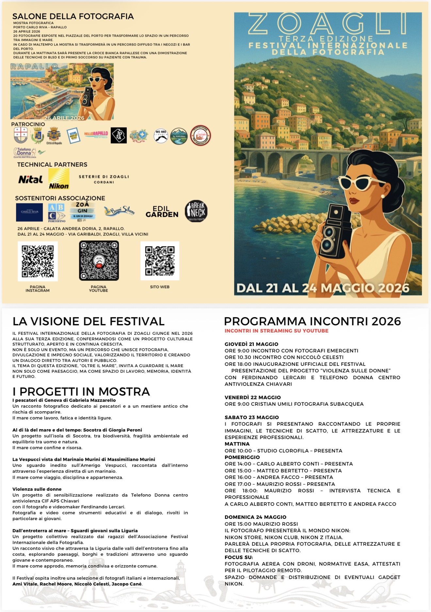

COMUNICATO STAMPA
Festival Internazionale della Fotografia 2026 – Zoagli
Festival Internazionale della Fotografia 2026: il tema “Oltre il Mare” e la partecipazione del Centro Antiviolenza Telefono Donna CIF APS del Tigullio (TDCA)
Il Festival Internazionale della Fotografia, in programma dal 21 al 24 maggio 2026 a Zoagli, presenta per questa edizione il tema “Oltre il Mare”, un invito a esplorare confini, emozioni e nuove prospettive attraverso lo sguardo fotografico e il racconto visivo del territorio.
Tra le iniziative speciali, il Festival ospita il contributo del Centro Antiviolenza Telefono Donna CIF APS del Tigullio (TDCA), che presenterà il cortometraggio di sensibilizzazione “Quel giorno se ne andò anche il mare”, scritto e diretto dal filmmaker Ferdinando Lercari.
Il cortometraggio affronta il tema della violenza di genere, con particolare attenzione alle sue forme più sottili e invisibili, spesso difficili da riconoscere ma profondamente trasformative.
Il cortometraggio “Quel giorno se ne andò anche il mare” è realizzato nell’ambito del progetto “Sinergia Antiviolenza – Formarsi per agire”, sostenuto dal Fondo di Beneficenza ed opere di carattere sociale e culturale di Intesa Sanpaolo.
Il progetto nasce dall’esigenza di contrastare la cultura del silenzio e dell’indifferenza, che troppo spesso accompagna e alimenta le dinamiche della violenza. Attraverso un linguaggio visivo ed emozionale, il Centro Antiviolenza si rivolge in particolare alle giovani generazioni, utilizzando il cinema come strumento di consapevolezza e prevenzione.
Girato tra gli scorci suggestivi di Zoagli, il cortometraggio racconta la storia di due giovani che si incontrano lungo una spiaggia nel corso delle stagioni. Con il passare del tempo, emergono segnali di un disagio profondo nella protagonista: silenzi, distanze e piccoli cambiamenti che anticipano una trasformazione più grande. Il ragazzo resta accanto a lei, fino a quando, un giorno, lei non si presenta più.
La scelta della location non è casuale: la bellezza del paesaggio ligure – tra scogliere e mare – crea un forte contrasto con la dimensione intima e silenziosa della violenza, trasformando il mare in un elemento simbolico che accompagna e osserva il cambiamento.
Oltre alla programmazione ufficiale, il Festival prevede un’anteprima speciale il 26 aprile 2026 presso il Porto Carlo Riva di Rapallo, offrendo al pubblico un primo momento di incontro con i contenuti e i temi dell’edizione. Durante la giornata sarà inoltre presente la Croce Bianca Rapallese, che realizzerà una dimostrazione aperta al pubblico delle manovre di primo soccorso BLSD (Basic Life Support and Defibrillation) e gestione del trauma, promuovendo la cultura della prevenzione e della sicurezza.
Il Festival Internazionale della Fotografia invita la comunità a partecipare a questa esperienza culturale, in cui fotografia e cinema diventano strumenti di narrazione e riflessione sociale, contribuendo a diffondere un messaggio di consapevolezza e responsabilità condivisa sul tema della violenza di genere.